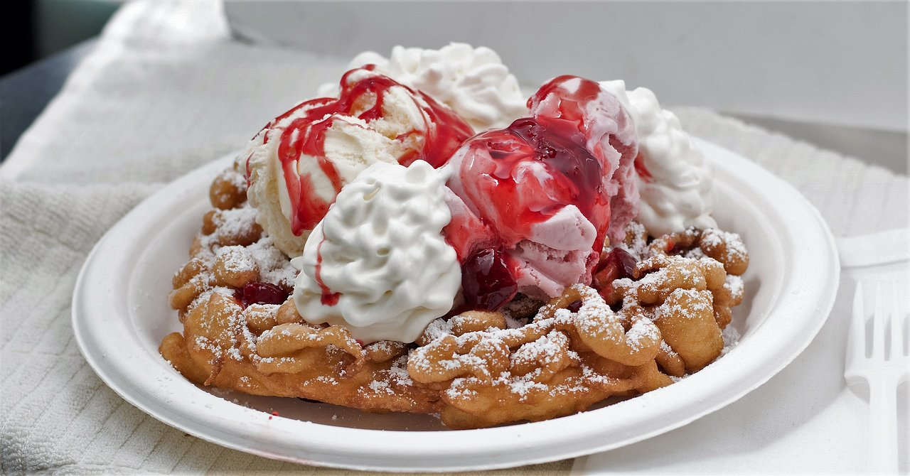

Myelena's Favorite Desserts

Fresas Con Crema 😜
- Strawberries
- Slice 2 cups of strawberries
- Mexican Crema
- Mix crema, Condensed milk, Vanilla Extract, and Sugar till smooth and creamy
- Sweetened Condensed Milk
- Vanilla Extract
- Use one teaspoon and also sugar

Funnel Cake 🍰
- Flour
- Egg
- Mix flour, 1 Egg, Milk, and Baking Powder until smooth
- Milk
- Baking powder
- Use one teaspoon of baking powder
- Oil
- Heat oil into a pan 1 inch deep over medium high heat
- Pour batter into the oil in circular motion and fry until golden on both sides
- ** Bonus** Dust with powdered sugar once done! :D

Tiramisu 🍫
- Heavy Whipping Cream
- Use 1 cup of Heavy Whipping Cream
- Mascarpone Cheese
- 1 Cup of Mascarpone Cheese or Cream Cheese
- Whip the Cream, Mascarpone, and Sugar together until smooth and fluffy.
- Sugar
- Brewed Coffee [Cooled]
- Use one cup of Brewed Coffee
- Dip Ladyfingers quickly in coffee [don't soak them too long!]
- Ladyfinger Cookies
- Layer dipped ladyfingers and cream mixture in a dish- repeat until all ingredients are used.
- Cocoa Powder
- Dust the top with cocoa powder, chill for at least 2 hours, then serve cold 😋